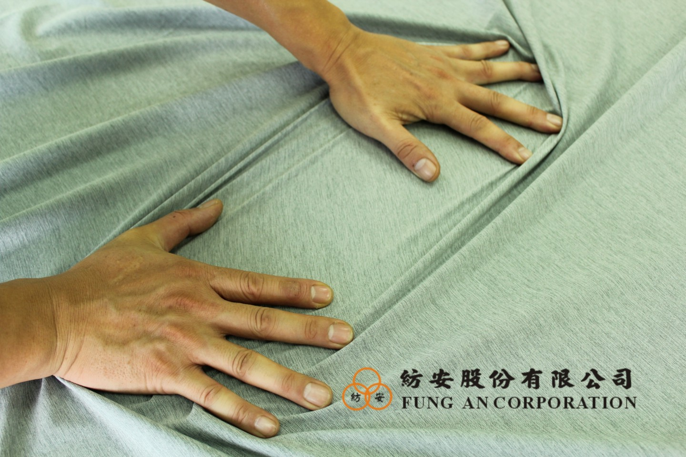
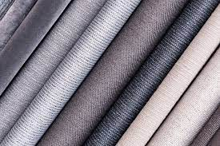
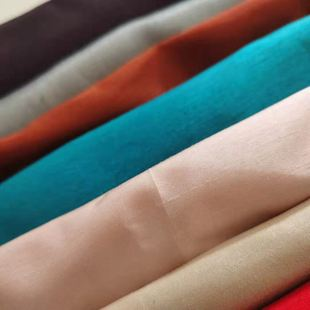
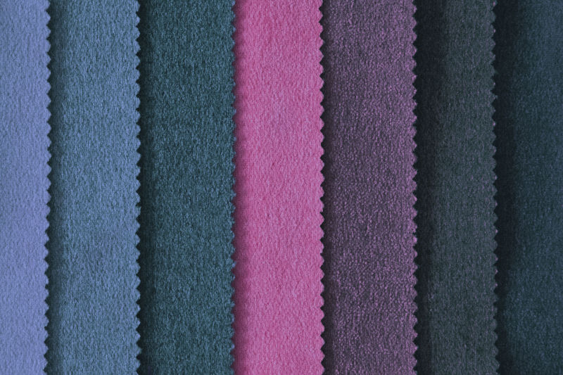

代工市場
品質、創新、管理
透過為一些品牌大廠代工，展現自身擁有的特殊技術或機器做出差異化，進而吸引客戶及消費者基本要求。
生產速度要快、技術創新要快、反映客戶需求要快、原物料來源穩定
大型品牌廠、大型成衣加工廠目前，代工廠以垂直整合生產線為主軸，
或轉型成經營自有品牌，接受客製化訂單，向相關合作工廠下單製作樣板服裝、布料。
生產速度要快、技術創新要快、反映客戶需求要快、原物料來源穩定
大型品牌廠、大型成衣加工廠目前，代工廠以垂直整合生產線為主軸，
或轉型成經營自有品牌，接受客製化訂單，向相關合作工廠下單製作樣板服裝、布料。

客製化
為迎合特定族群訂單，而發展出針對特殊需求而發展出的新市場，而在未來可發展出自創品牌，自產自銷 市場優勢:差異化、短交期、個性化、接單生產量大 客製化的點在服裝機能上，再來是服裝設計 客戶群有品牌廠、小型團體、公司及社會機構團體
完全標準化
依紡安現有青纖維健康紗來做產品(衣服,襪子,貼身衣物等等) 或創造品牌來販售
依紡安現有青纖維健康紗來做產品(衣服,襪子,貼身衣物等等) 或創造品牌來販售

高度標準化
例如:顧客需要染什麼顏色的原料以及青纖維健康紗的延伸產品來作客製化
例如:顧客需要染什麼顏色的原料以及青纖維健康紗的延伸產品來作客製化

高度客製化
例如:學生制服或顧客需要什麼需求的原料(例如:防水,難燃,抗撕裂)來製作衣服以及版型設計
例如:學生制服或顧客需要什麼需求的原料(例如:防水,難燃,抗撕裂)來製作衣服以及版型設計
